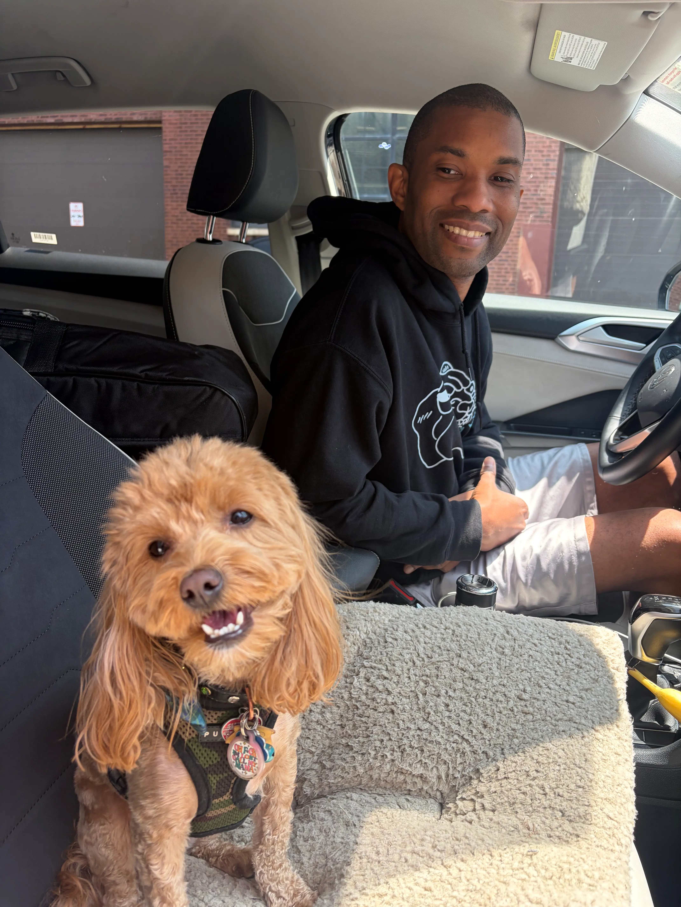

"Music is one expression of how I experience the world, but it isn't separate from the rest of my life. The places I travel, the people I meet, the things I learn, and the moments that challenge or inspire me all become part of what I create. Off stage is where much of that discovery happens."
Travel gives me the opportunity to experience new places, people, cultures, food, and ways of life. It helps me step outside of my normal environment, remain open-minded, and bring new energy and perspective back into my music and creative work.
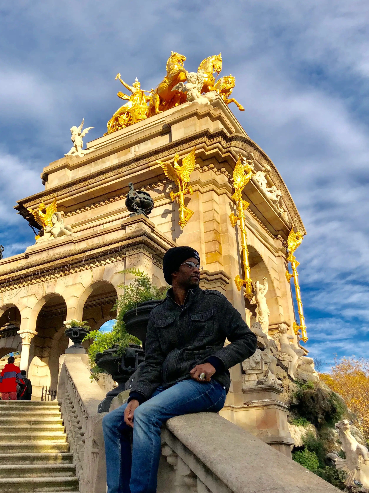
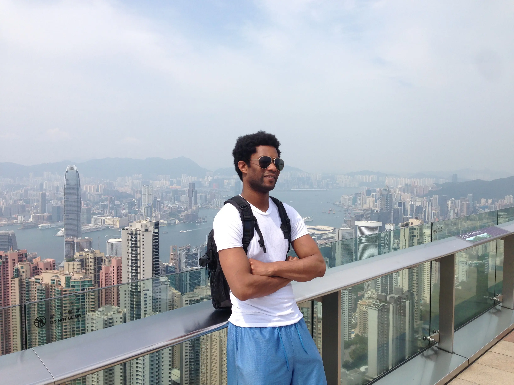
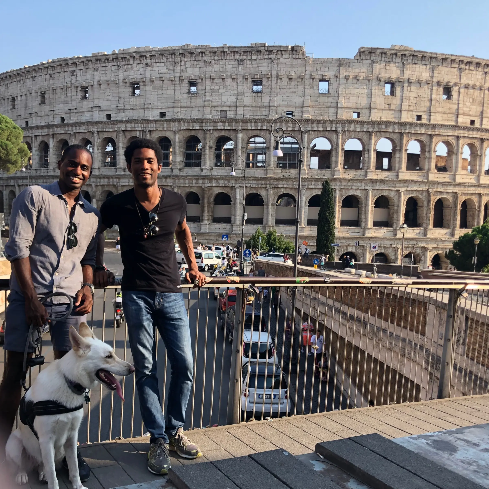
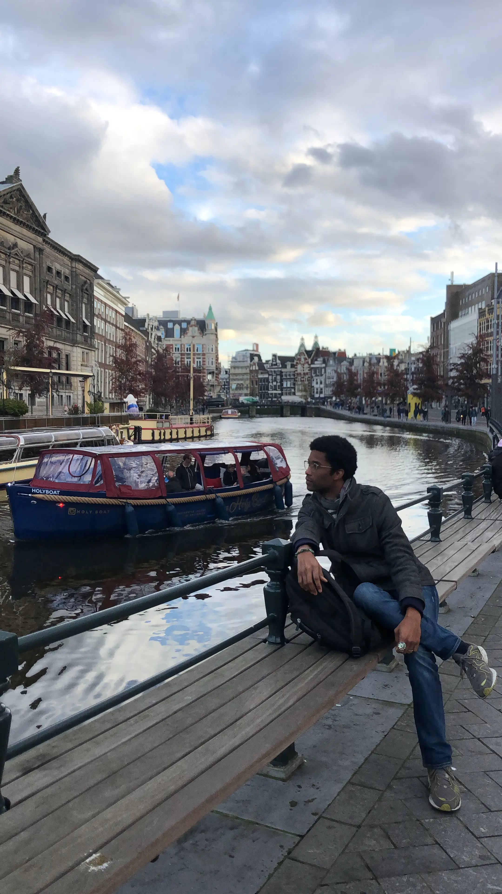
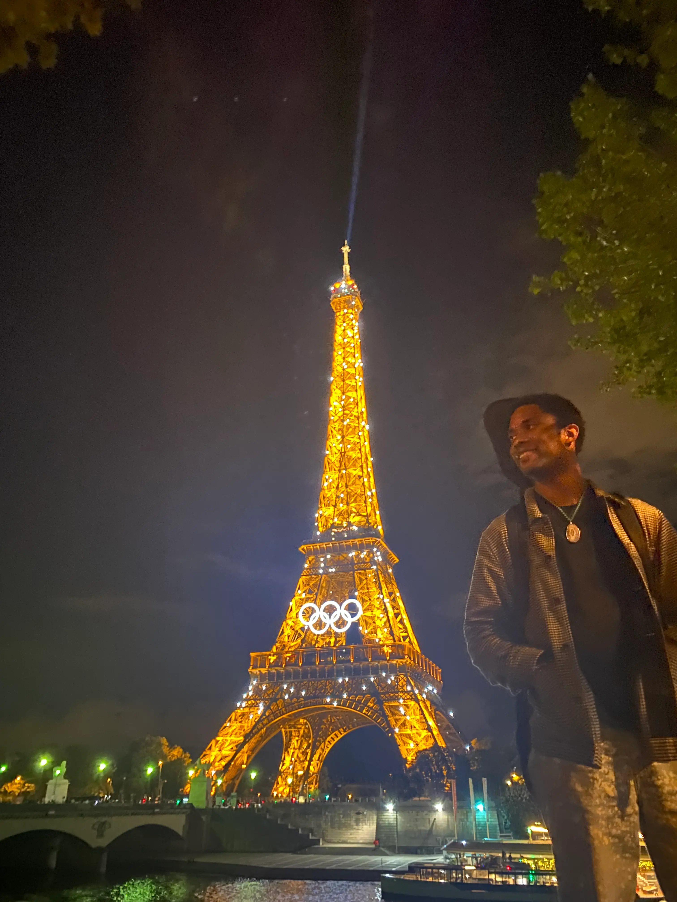
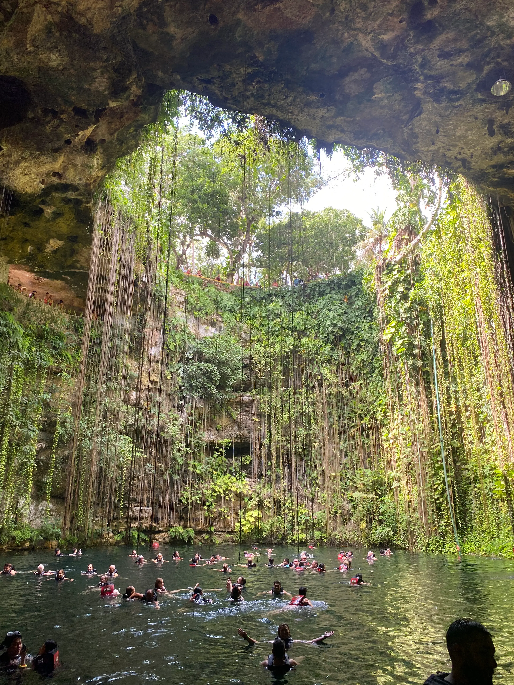
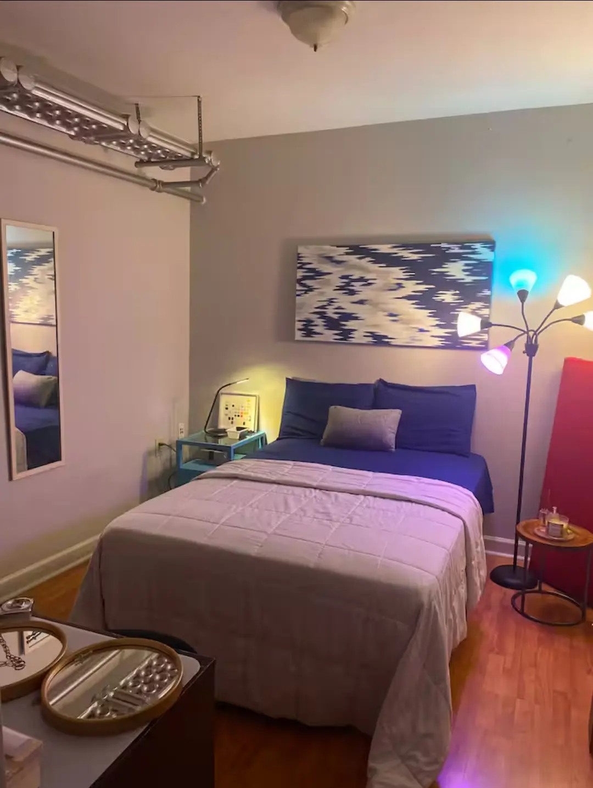
When I'm not traveling myself, I enjoy welcoming travelers to Chicago. I host a comfortable space in the city for visitors looking for a relaxed, local experience.
Stay in Chicago →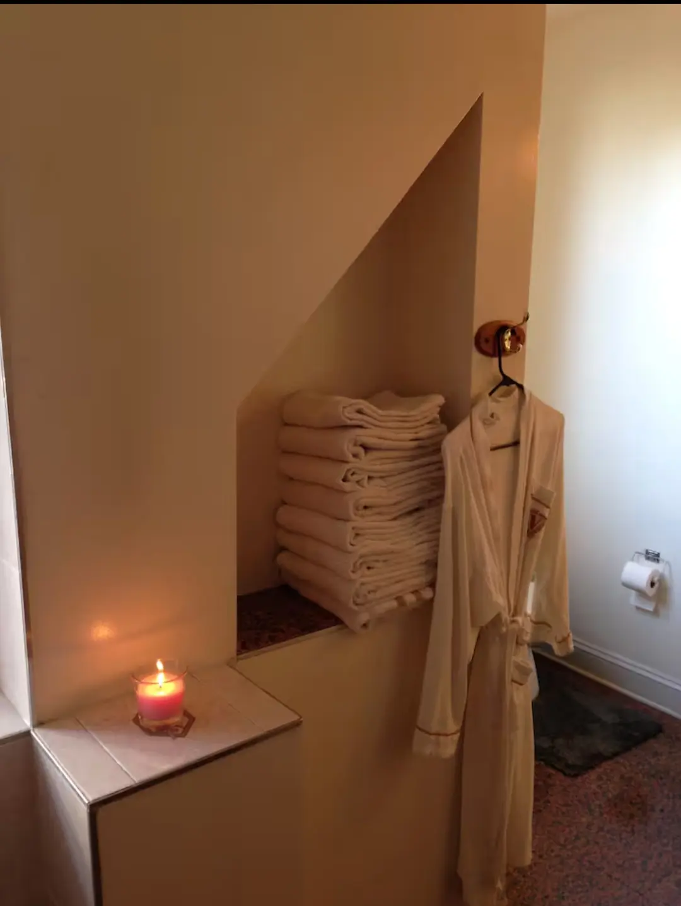
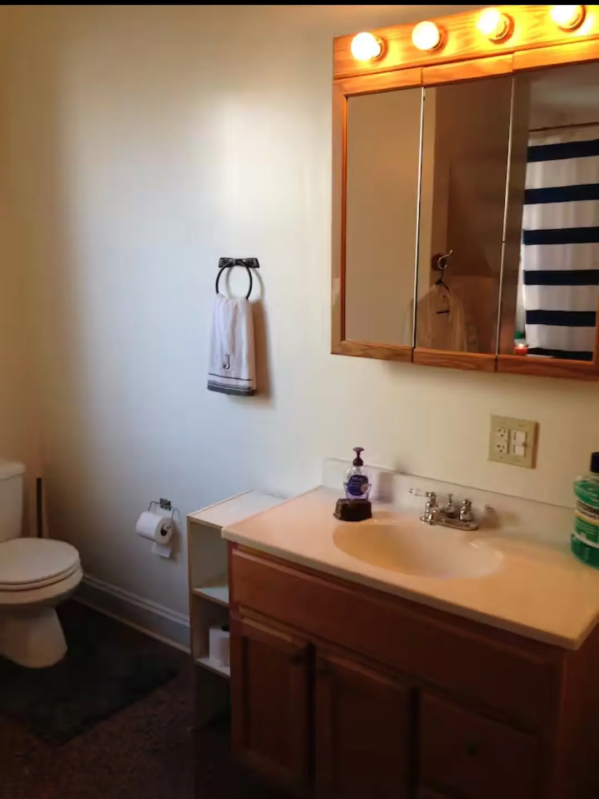
Pet Care
I've always loved being around dogs. When I'm not performing or traveling, I occasionally care for dogs here in Chicago — something I genuinely enjoy outside of music
Visit my Rover profile →
Yoga is part of how I stay grounded, maintain awareness, and connect the body, mind, and creative process. It also relates closely to the philosophy behind Keepin’ It Movin’—understanding when to move, when to be still, and how to remain conscious throughout both.
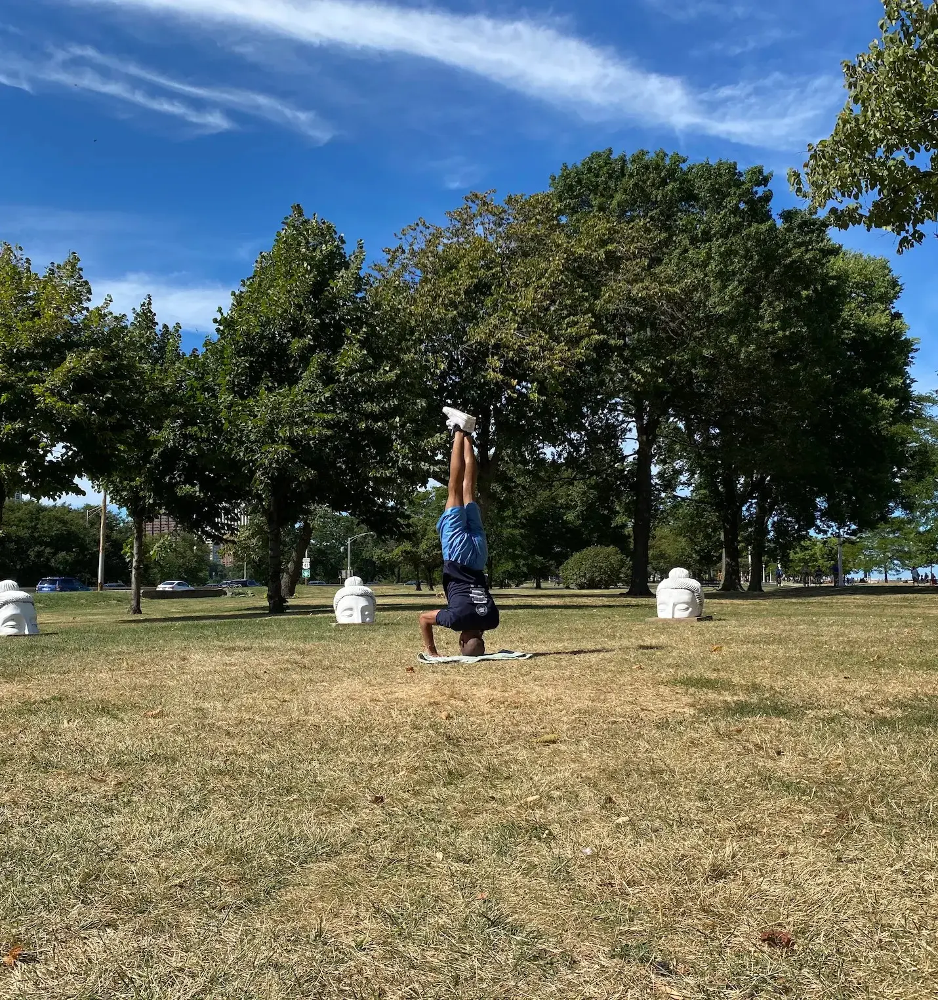
Have a question, want to connect, or simply want to share a thought? I'd love to hear from you.